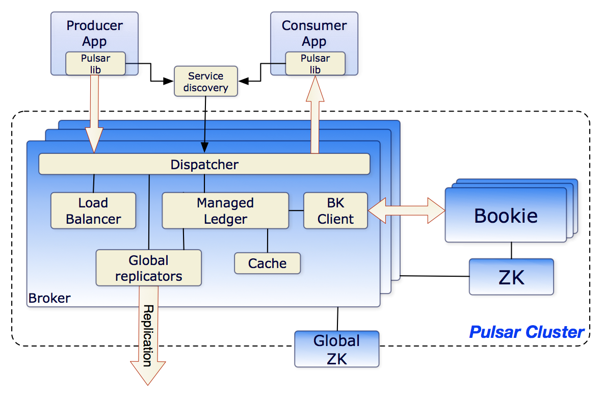

- 00 开篇词 优秀的程序员，你的技术栈中不能只有“增删改查”.md.html
- 00 预习 怎样更好地学习这门课？.md.html
- 01 为什么需要消息队列？.md.html
- 02 该如何选择消息队列？.md.html
- 03 消息模型：主题和队列有什么区别？.md.html
- 04 如何利用事务消息实现分布式事务？.md.html
- 05 如何确保消息不会丢失.md.html
- 06 如何处理消费过程中的重复消息？.md.html
- 07 消息积压了该如何处理？.md.html
- 08 答疑解惑（一） 网关如何接收服务端的秒杀结果？.md.html
- 09 学习开源代码该如何入手？.md.html
- 10 如何使用异步设计提升系统性能？.md.html
- 11 如何实现高性能的异步网络传输？.md.html
- 12 序列化与反序列化：如何通过网络传输结构化的数据？.md.html
- 13 传输协议：应用程序之间对话的语言.md.html
- 14 内存管理：如何避免内存溢出和频繁的垃圾回收？.md.html
- 15 Kafka如何实现高性能IO？.md.html
- 16 缓存策略：如何使用缓存来减少磁盘IO？.md.html
- 17 如何正确使用锁保护共享数据，协调异步线程？.md.html
- 18 如何用硬件同步原语（CAS）替代锁？.md.html
- 19 数据压缩：时间换空间的游戏.md.html
- 20 RocketMQ Producer源码分析：消息生产的实现过程.md.html
- 21 Kafka Consumer源码分析：消息消费的实现过程.md.html
- 22 Kafka和RocketMQ的消息复制实现的差异点在哪？.md.html
- 23 RocketMQ客户端如何在集群中找到正确的节点？.md.html
- 24 Kafka的协调服务ZooKeeper：实现分布式系统的“瑞士军刀”.md.html
- 25 RocketMQ与Kafka中如何实现事务？.md.html
- 26 MQTT协议：如何支持海量的在线IoT设备.md.html
- 27 Pulsar的存储计算分离设计：全新的消息队列设计思路.md.html
- 28 答疑解惑（二）：我的100元哪儿去了？.md.html
- 29 流计算与消息（一）：通过Flink理解流计算的原理.md.html
- 30 流计算与消息（二）：在流计算中使用Kafka链接计算任务.md.html
- 31 动手实现一个简单的RPC框架（一）：原理和程序的结构.md.html
- 32 动手实现一个简单的RPC框架（二）：通信与序列化.md.html
- 33 动手实现一个简单的RPC框架（三）：客户端.md.html
- 34 动手实现一个简单的RPC框架（四）：服务端.md.html
- 35 答疑解惑（三）：主流消息队列都是如何存储消息的？.md.html
- 加餐 JMQ的Broker是如何异步处理消息的？.md.html
- 结束语 程序员如何构建知识体系？.md.html
- 捐赠
27 Pulsar的存储计算分离设计：全新的消息队列设计思路
你好，我是李玥。
之前的课程，我们大部分时间都在以 RocketMQ、Kafka 和 RabbitMQ 为例，通过分析源码的方式，来讲解消息队列的实现原理。原因是，这三种消息队列在国内的受众群体非常庞大，大家在工作中会经常用到。这节课，我给你介绍一个不太一样的开源消息队列产品：Apache Pulsar。
Pulsar 也是一个开源的分布式消息队列产品，最早是由 Yahoo 开发，现在是 Apache 基金会旗下的开源项目。你可能会觉得好奇，我们的课程中为什么要花一节课来讲 Pulsar 这个产品呢？原因是，Pulsar 在架构设计上，和其他的消息队列产品有非常显著的区别。我个人的观点是，Pulsar 的这种全新的架构设计，很可能是消息队列这类中间件产品未来架构的发展方向。
接下来我们一起看一下，Pulsar 到底有什么不同？
Pulsar 的架构和其他消息队列有什么不同？
我们知道，无论是 RocketMQ、RabbitMQ 还是 Kafka，消息都是存储在 Broker 的磁盘或者内存中。客户端在访问某个主题分区之前，必须先找到这个分区所在 Broker，然后连接到这个 Broker 上进行生产和消费。
在集群模式下，为了避免单点故障导致丢消息，Broker 在保存消息的时候，必须也把消息复制到其他的 Broker 上。当某个 Broker 节点故障的时候，并不是集群中任意一个节点都能替代这个故障的节点，只有那些“和这个故障节点拥有相同数据的节点”才能替代这个故障的节点。原因就是，每一个 Broker 存储的消息数据是不一样的，或者说，每个节点上都存储了状态（数据）。这种节点称为“有状态的节点（Stateful Node）”。
Pulsar 与其他消息队列在架构上，最大的不同在于，它的 Broker 是无状态的（Stateless）。也就是说，在 Pulsar 的 Broker 中既不保存元数据，也不存储消息。那 Pulsar 的消息存储在哪儿呢？我们来看一下 Pulsar 的架构是什么样的。

这张 Pulsar 的架构图来自 Pulsar 的官方文档，如果你想了解这张架构图的细节，可以去看官方文档中的Architecture Overview。我来给你解读一下这张图中我们感兴趣的重点内容。
先来看图中右侧的 Bookie 和 ZK 这两个方框，这两个方框分别代表了 BookKeeper 集群和 ZooKeeper 集群。ZooKeeper 集群的作用，我在《[24 | Kafka 的协调服务 ZooKeeper：实现分布式系统的“瑞士军刀]》这节课中专门讲过，在 Pulsar 中，ZooKeeper 集群的作用和在 Kafka 中是一样的，都是被用来存储元数据。BookKeeper 集群则被用来存储消息数据。
那这个 BookKeeper 又是什么呢？BookKeeper 有点儿类似 HDFS，是一个分布式的存储集群，只不过它的存储单元和 HDFS 不一样，在 HDFS 中存储单元就是文件，这个很好理解。而 BookKeeper 的存储单元是 Ledger。这个 Ledger 又是什么呢？
这里再次吐槽一下国外程序员喜欢发明概念、增加学习成本这个坏习惯。其实 Ledger 就是一段 WAL（Write Ahead Log），或者你可以简单地理解为某个主题队列的一段，它包含了连续的若干条消息，消息在 Ledger 中称为 Entry。为了保证 Ledger 中的 Entry 的严格顺序，Pulsar 为 Ledger 增加一次性的写入限制，Broker 创建一个 Ledger 后，只有这个 Broker 可以往 Ledger 中写入 Entry，一旦 Ledger 关闭后，无论是 Broker 主动关闭，还是因为 Broker 宕机异常关闭，这个 Ledger 就永远只能读取不能写入了。如果需要继续写入 Entry，只能新建另外一个 Ledger。
请你注意一下，这种“一次性写入”的设计，它的主要目的是为了解决并发写入控制的问题，我在之前课程中讲过，对于共享资源数据的并发写一般都是需要加锁的，否则很难保证数据的一致性。对于分布式存储来说，就需要加“分布式锁”。
但我们知道，分布式锁本身就很难实现，使用分布式锁对性能也会有比较大的损失。这种“一次性写入”的设计，只有创建 Ledger 的进程可以写入数据，Ledger 这个资源不共享，也就不需要加锁，是一种很巧妙的设计，你在遇到类似场景的时候可以借鉴。
消息数据由 BookKeeper 集群负责存储，元数据由 ZooKeeper 集群负责存储，Pulsar 的 Broker 上就不需要存储任何数据了，这样 Broker 就成为了无状态的节点。
虽然 Broker 是无状态的，不存储任何的数据，但是，在一个特定的时刻，每一个主题的分区，还是要落在某个具体的 Broker 上。不能说多个 Broker 同时读写同一个分区，因为这样是没有办法保证消息的顺序的，也没有办法来管理消费位置。
再来看图中左侧最大的那个 Broker 方框，在 Broker 中包含了几个重要的模块。Load Balancer 负责动态的分配，哪些 Broker 管理哪些主题分区。Managed Ledger 这个模块负责管理本节点需要用到的那些 Ledger，当然这些 Ledger 都是保存在 BookKeeper 集群中的。为了提升性能，Pulsar 同样采用用了一个 Cache 模块，来缓存一部分 Ledger。
Pulsar 的客户端要读写某个主题分区上的数据之前，依然要在元数据中找到分区当前所在的那个 Broker，这一点是和其他消息队列的实现是一样的。不一样的地方是，其他的消息队列，分区与 Broker 的对应关系是相对稳定的，只要不发生故障，这个关系是不会变的。而在 Pulsar 中，这个对应关系是动态的，它可以根据 Broker 的负载情况进行动态调整，而且由于 Broker 是无状态的，分区可以调整到集群中任意一个 Broker 上，这个负载均衡策略就可以做得非常简单并且灵活。如果某一个 Broker 发生故障，可以立即用任何一个 Broker 来替代它。
那在这种架构下，Pulsar 又是如何来完成消息收发的呢？客户端在收发消息之前，需要先连接 Service Discovery 模块，获取当前主题分区与 Broker 的对应关系，然后再连接到相应 Broker 上进行消息收发。客户端收发消息的整体流程，和其他的消息队列是差不多的。比较显著的一个区别就是，消息是保存在 BookKeeper 集群中的，而不是本机上。数据的可靠性保证也是 BookKeeper 集群提供的，所以 Broker 就不需要再往其他的 Broker 上复制消息了。
图中的 Global replicators 模块虽然也会复制消息，但是复制的目的是为了在不同的集群之间共享数据，而不是为了保证数据的可靠性。集群间数据复制是 Pulsar 提供的一个特色功能，具体可以看一下 Pulsar 文档中的geo-replication这部分。
存储计算分离的设计有哪些优点？
在 Pulsar 这种架构下，消息数据保存在 BookKeeper 中，元数据保存在 ZooKeeper 中，Broker 的数据存储的职责被完全被剥离出去，只保留了处理收发消息等计算的职责，这就是一个非常典型的“存储计算分离”的设计。
什么是存储计算分离呢？顾名思义，就是将系统的存储职责和计算职责分离开，存储节点只负责数据存储，而计算节点只负责计算，也就是执行业务逻辑。这样一种设计，称为存储计算分离。存储计算分离设计并不新鲜，它的应用其实是非常广泛的。
比如说，所有的大数据系统，包括 Map Reduce 这种传统的批量计算，和现在比较流行的 Spark、Flink 这种流计算，它们都采用的存储计算分离设计。数据保存在 HDFS 中，也就是说 HDFS 负责存储，而负责计算的节点，无论是用 YARN 调度还是 Kubernetes 调度，都只负责“读取 - 计算 - 写入”这样一种通用的计算逻辑，不保存任何数据。
更普遍的，我们每天都在开发的各种 Web 应用和微服务应用，绝大多数也采用的是存储计算分离的设计。数据保存在数据库中，微服务节点只负责响应请求，执行业务逻辑。也就是说，数据库负责存储，微服务节点负责计算。
那存储计算分离有什么优点呢？我们分两方面来看。
对于计算节点来说，它不需要存储数据，节点就变成了无状态的（Stateless）节点。一个由无状态节点组成的集群，管理、调度都变得非常简单了。集群中每个节点都是一样的，天然就支持水平扩展。任意一个请求都可以路由到集群中任意一个节点上，负载均衡策略可以做得非常灵活，可以随机分配，可以轮询，也可以根据节点负载动态分配等等。故障转移（Failover）也更加简单快速，如果某个节点故障了，直接把请求分配给其他节点就可以了。
对比一下，像 ZooKeeper 这样存储计算不分离的系统，它们的故障转移就非常麻烦，一般需要用复杂的选举算法，选出新的 leader，提供服务之前，可能还需要进行数据同步，确保新的节点上的数据和故障节点是完全一致之后，才可以继续提供服务。这个过程是非常复杂而且漫长的。
对于计算节点的开发者来说，可以专注于计算业务逻辑开发，而不需要关注像数据一致性、数据可靠性、故障恢复和数据读写性能等等这些比较麻烦的存储问题，极大地降低了开发难度，提升了开发效率。
而对于存储系统来说，它需要实现的功能就很简单，系统的开发者只需要专注于解决一件事就可以了，那就是“如何安全高效地存储数据？”并且，存储系统的功能是非常稳定的，比如像 ZooKeeper、HDFS、MySQL 这些存储系统，从它们诞生到现在，功能几乎就没有变过。每次升级都是在优化存储引擎，提升性能、数据可靠性、可用性等等。
接下来说存储计算分离这种设计的缺点。
俗话说，背着抱着一样沉。对于一个系统来说，无论存储和计算是不是分离的，它需要完成的功能和解决的问题是一样的。就像我刚刚讲到的，Pulsar 的 Broker 相比于其他消息队列的 Broker，各方面都变的很简单。这并不是说，存储计算分离的设计能把系统面临的各种复杂的问题都解决了，其实一个问题都没解决，只是把这些问题转移到了 BookKeeper 这个存储集群上了而已。
BookKeeper 依然要解决数据一致性、节点故障转移、选举、数据复制等等这些问题。并且，存储计算分离之后，原来一个集群变成了两个集群，整个系统其实变得更加复杂了。
另外，存储计算分离之后，系统的性能也会有一些损失。比如，从 Pulsar 的 Broker 上消费一条消息，Broker 还需要去请求 BookKeeper 集群读取数据，然后返回给客户端，这个过程至少增加了一次网络传输和 n 次内存拷贝。相比于直接读本地磁盘，性能肯定是要差一些的。
不过，对于业务系统来说，采用存储计算分离的设计，它并不需要自己开发一个数据库或者 HDFS，只要用现有的成熟的存储系统就可以了，所以相当于系统的复杂度还是降低了。相比于存储计算分离带来的各种优点，损失一些性能也是可以接受的。
因此，对于大部分业务系统来说，采用存储计算分离设计，都是非常划算的。
小结
这节课我们一起分析了 Apache Pulsar 的架构，然后一起学习了一下存储计算分离的这种设计思想。
Pulsar 和其他消息队列最大的区别是，它采用了存储计算分离的设计。存储消息的职责从 Broker 中分离出来，交给专门的 BookKeeper 存储集群。这样 Broker 就变成了无状态的节点，在集群调度和故障恢复方面更加简单灵活。
存储计算分离是一种设计思想，它将系统的存储职责和计算职责分离开，存储节点只负责数据存储，而计算节点只负责计算，计算节点是无状态的。无状态的计算节点，具有易于开发、调度灵活的优点，故障转移和恢复也更加简单快速。这种设计的缺点是，系统总体的复杂度更高，性能也更差。不过对于大部分分布式的业务系统来说，由于它不需要自己开发存储系统，采用存储计算分离的设计，既可以充分利用这种设计的优点，整个系统也不会因此变得过于复杂，综合评估优缺点，利大于弊，更加划算。
© 2019 - 2023 Liangliang Lee. Powered by gin and hexo-theme-book.